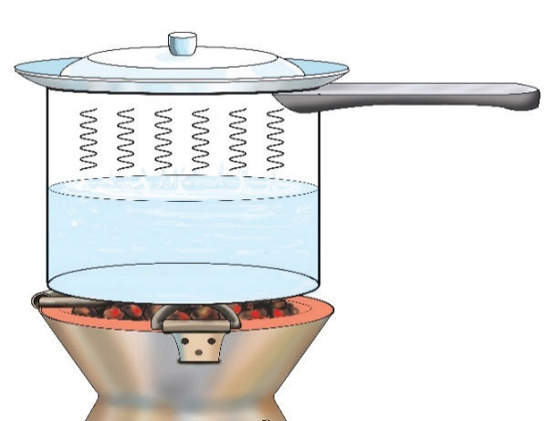

Constant attention is required to ensure that the water is continuously boiling and replenished as required.
It can be costly. While steaming can be done using basic kitchen tools like a steamer basket or improvised setups, some people may prefer dedicated steamers (electric or stovetop), which can be an additional cost.
Steaming may not add significant flavour to cooked food, unlike roasting or grilling, which impart a smoky flavour.
Steamed dishes may lack the crispiness or textural variety found in dishes prepared using other methods, such as frying and baking.
Care must be taken not to overcook delicate ingredients, as steaming can quickly turn them mushy and negatively affect their appearance and taste.
The plate should be a good conductor of heat. The food is cooked by the steam from the boiling water. Make sure that the plate fits well in the cooking pan to prevent the steam from escaping. Vegetables that can be cooked by the plate steaming method include carrots and cabbage. Other foods can be cooked in the boiling water at the same time to save energy, for instance, meat and legumes.
